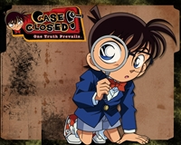

Case Closed
Jimmy Kudo is a 17 year old high school detective who bears the name "Modern Sherlock Holmes". He is turned into a 7 year old after thugs catch him watching an illegal trade take place. The drug he is poisoned with should have killed him but he wakes up a decade younger. In order to track down his assailants, Jimmy decides to keep his identity a secret and move in with his girlfriend, Rachel who's father is a detective. In this new situation, Jimmy finds himself continuously solving murders and mysteries posing mainly as Rachel's father.